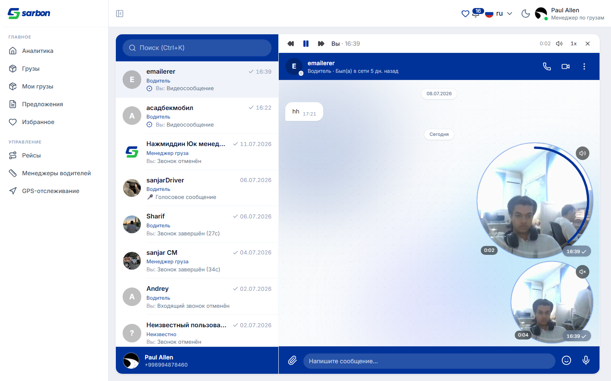
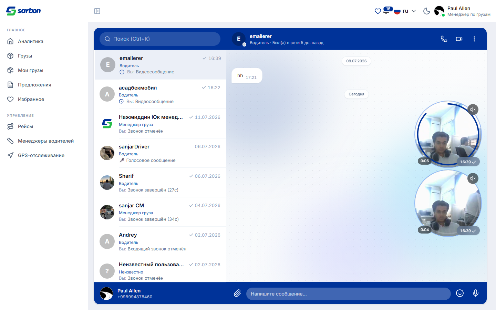
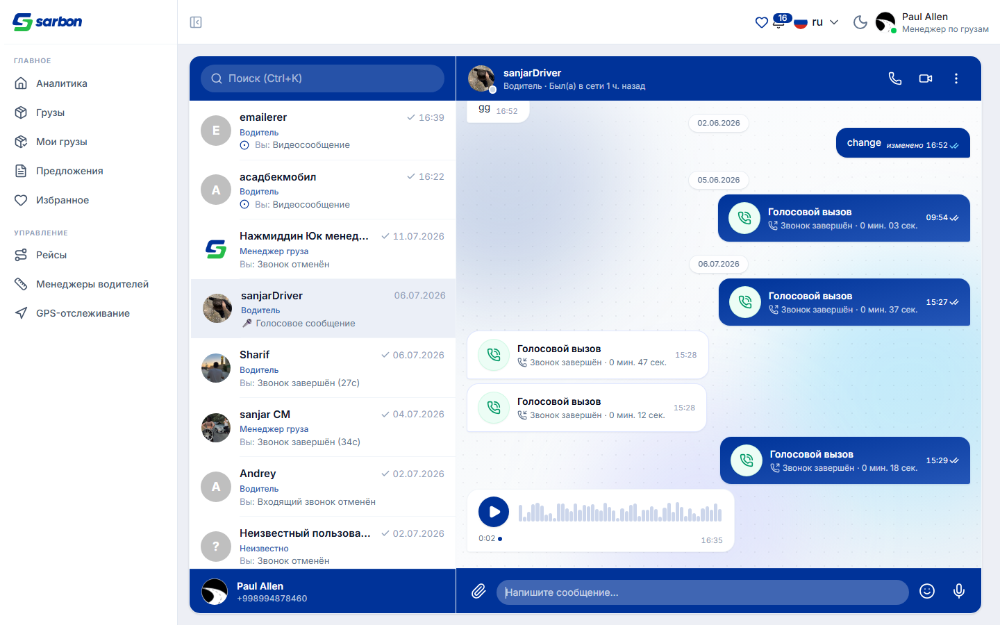
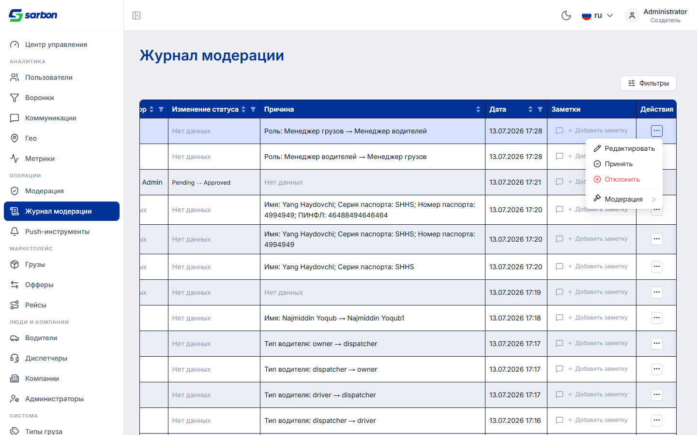
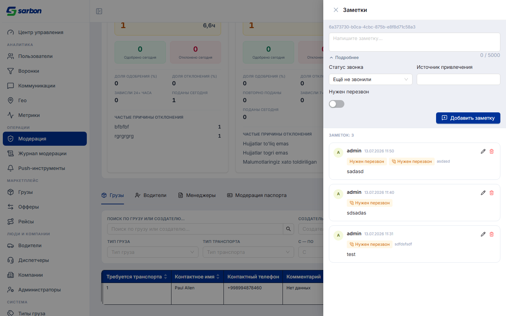
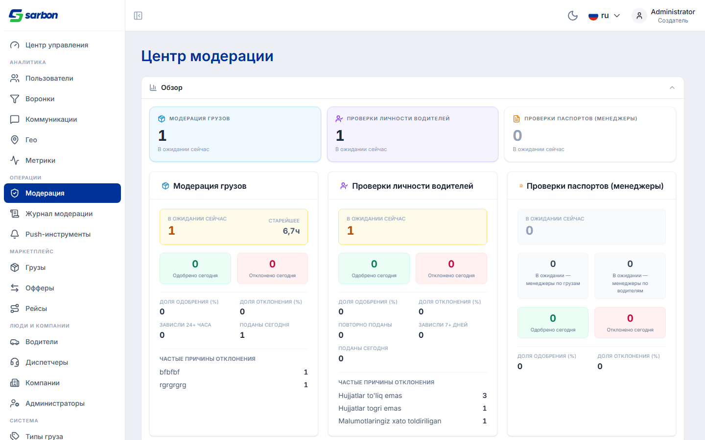
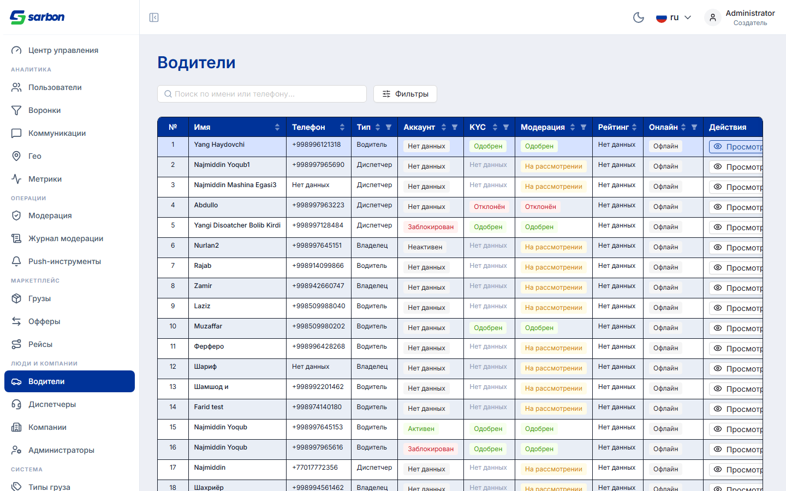
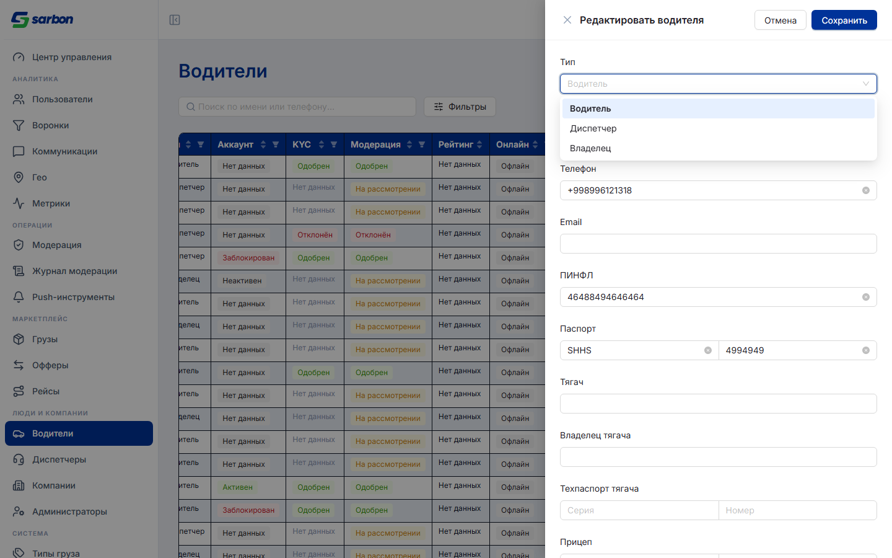

13.07.2026 — день админ-консоли и чата. В админке появилась полноценная система заметок модератора: к любой сущности (груз, водитель, менеджер, компания) можно вести внутреннюю переписку-историю — колонка «Заметки» с последней записью и счётчиком в очередях модерации и журнале, панель-тред с добавлением/редактированием/удалением, статусом звонка, источником привлечения и флагом «нужен перезвон» (автор берётся из токена, 15 локалей). Журнал модерации получил меню действий в каждой строке — редактирование сущности и смена модерационного статуса без ухода со страницы, плюс модалку истории модерации груза и липкий верхний скроллбар таблицы. Все ~15 админ-таблиц обзавелись сквозной нумерацией № (не сбрасывается при пагинации). Исправлен баг сворачиваемой сводки модерации (открытие прятало детальные карточки). В чате побеждены тормоза телефонов от круглых видеосообщений: клипы теперь грузятся лениво по мере прокрутки, кольцо прогресса рисуется без 60 re-render/сек, а воспроизведение получило верхнюю панель в стиле Telegram (пауза, перемотка, скорость, одно воспроизведение за раз) и «эксклюзивное» увеличение по клику. Два фикса форм редактирования в админке: после сохранения кэш детали инвалидируется (раньше повторное открытие показывало старый тип водителя и повторное сохранение падало с 500), а из выпадающего списка «Тип» убраны легаси-значения «Компания» и «Фрилансер» — включая записи со старым верхним регистром (FREELANCER), при этом легаси-значение существующей записи отображается локализованной подписью, а не сырым кодом.
| Область | Что было / причина | Что сделано | Файлы |
|---|---|---|---|
| Заметки администратора (внутренние комментарии) feature закоммичено |
Модераторам негде было фиксировать историю работы с сущностью (звонили/не звонили, договорённости, источник привлечения) — контекст терялся между сменами. | Система заметок к любой сущности (груз / водитель / менеджер / компания) через /v1/admin/comments: колонка «Заметки» (последняя запись + счётчик «+N») в очередях модерации и журнале; панель-тред с добавлением, редактированием, удалением; поля «статус звонка», «источник привлечения», «нужен перезвон»; автор берётся из токена (не подделывается клиентом); ленивая загрузка панели — таблица из N строк не монтирует N панелей. | AdminCommentsDrawer(new) · AdminNotesCell(new) · adminComments.ts(new) · endpoints · queryKeys, локали ×15, 4 теста |
| Журнал модерации — действия из строки feature закоммичено |
Журнал был read-only: увидев проблемную запись, модератор шёл искать сущность на других страницах, чтобы отредактировать или сменить статус. | Меню «⋯» в каждой строке: Редактировать (открывает форму водителя/менеджера/груза с самозагрузкой по id), Принять / Отклонить и подменю «Модерация» (полный жизненный цикл: активировать, блокировать и т.д. — те же действия и подтверждения, что на страницах модерации); модалка истории модерации груза; статус «заблокирован» корректно выводится из to_status. | ModerationLogRowActions(new) · moderationLogActions.ts(new) · CargoModerationHistoryModal(new) · useModerationLifecycleItems(new), 3 теста |
| Нумерация № во всех админ-таблицах feature закоммичено |
В плотных «экселевских» таблицах не к чему привязаться при обсуждении («какая строка?»); при пагинации нумерация терялась. | Ведущая колонка «№» во всех ~15 админ-таблицах: сквозная (учитывает страницу — на 2-й странице при 50/стр первая строка = 51), реализована общим пропом таблицы + хелперами для AntD-таблиц. | Table (rowNumber prop) · rowNumberColumn(new) · usePaginationOffset(new) + 15 страниц, 3 теста |
| Сводка модерации — сворачиваемый обзор bug закоммичено |
Открытие «Общего вида» показывало KPI-карточки, но детальные карточки очередей оставались невидимыми (пустое место), а вкладки уезжали за экран. | Причина — вставленный motion.section обрывал каскад framer-motion-вариантов от AdminPageStack к карточкам (они застревали в opacity:0). Контент секции стал обычным <div> — карточки снова анимируются и занимают своё место. | AdminCollapsibleSection.tsx, render-тест |
| Журнал модерации — верхний скроллбар + полировка заметок feature закоммичено |
У широкой таблицы журнала горизонтальный скролл был только снизу — чтобы прокрутить, надо было уехать в конец списка. | Липкий верхний скроллбар, синхронизированный с таблицей (как в экселе); доработки панели заметок по итогам прогона. | TableTopScrollBar(new) · useTableTopScroll(new) · AdminModerationLogPage · AdminCommentsDrawer |
| Чат — видеосообщения не тормозят телефоны bug feature в рабочем дереве |
Открытие треда с круглыми видеосообщениями «вешало» телефон: каждый пузырёк качал весь клип при монтировании (~9 МБ на минуту записи × N клипов), кольцо прогресса перерисовывало пузырёк ~60 раз/сек, а прогресс загрузки дёргал стор на каждый сетевой чанк. | Ленивая загрузка клипа по приближению к экрану (IntersectionObserver, 300px); кольцо/время рисуются императивно в rAF без setState; прогресс загрузки — не чаще 1%; автоплей уважает reduced-motion и не перебивает голосовые. Плюс: верхняя панель воспроизведения в стиле Telegram (пауза, ±перемотка, скорость 1×/1.5×/2× с запоминанием, одно воспроизведение за раз) и увеличение видеосообщения по клику — эксклюзивное (другие сворачиваются). | ChatPlaybackBar(new) · useChatPlaybackStore(new) · ChatVideoNoteMessage · ChatVideoNoteRing · ChatVoiceMessage · useChatMediaSrc · useVideoNoteUploadStore, 2 теста |
| Формы редактирования в админке — свежий кэш после сохранения bug в рабочем дереве |
После смены типа водителя повторное открытие формы показывало старый тип («как будто не сохранилось»); повторное сохранение отправляло уже применённый переход — бэкенд отвечал 500. | Все три формы (водитель, диспетчер, груз) после успешного PATCH инвалидируют кэш детали — при повторном открытии форма показывает сохранённые значения, а повторный выбор того же значения уходит в ветку «нет изменений» (запрос не отправляется вовсе). | AdminDriverEditDrawer · AdminDispatcherEditDrawer · AdminCargoEditModal (инвалидция в onSuccess) |
| Тип водителя — убраны «Компания» и «Фрилансер» feature в рабочем дереве |
Продуктовое решение: легаси-типы «Компания» и «Фрилансер» не должны предлагаться при редактировании водителя (модерация и страница водителей используют одну форму). | Список «Тип» = Водитель · Диспетчер · Владелец. Исключение регистронезависимое (бэкенд отдаёт и freelancer, и FREELANCER); легаси-значение существующей записи отображается переводом («Компания»), а не сырым кодом, но выбрать его заново нельзя; неизвестные будущие типы по-прежнему не теряются. Логика — чистый хелпер + 5 юнит-тестов. | driverEditFields.ts (buildDriverTypeSelectValues) · AdminDriverEditDrawer (labelRender), тест(new) |
Все снимки сделаны в реальном приложении (dev-сервер на staging-API) с авторизацией: админ-консоль — учётка администратора, чат — менеджер грузов +998994878460.







